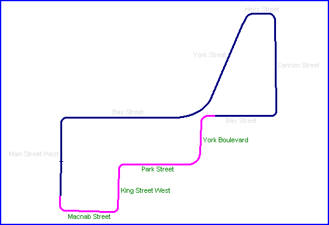
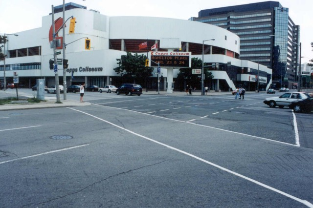
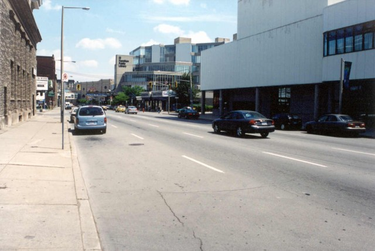
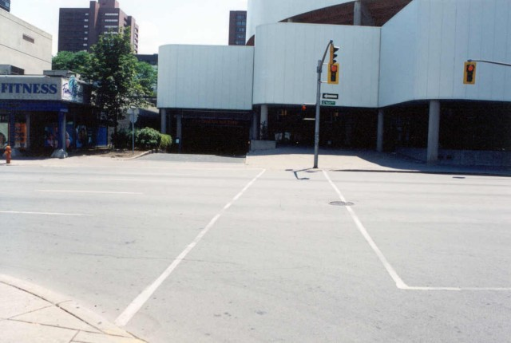
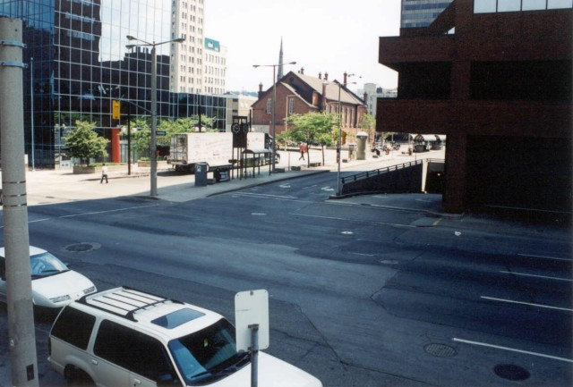
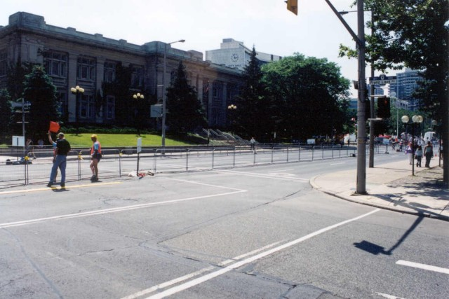

York Boulevard - Park Street - King Street - Macnab Street

Click on street names below to view photographs of that section.
|| Contents | Main to York | Hess to Bay | York to Macnab || Home ||

Turn 6 - Bay Street and York Boulevard

York Boulevard Straight

Turn 7 - York Boulevard and Park Street. The street at this point has been removed by the
building of the Copps Coliseum in the mid 1980's. The street would have been mostly to the
right in the above photo.

Turn 9 - King and Macnab Streets.

Turn 10 - Macnab and Main Streets
Photographs ©Chris Mann. Reproduced here with kind permission.